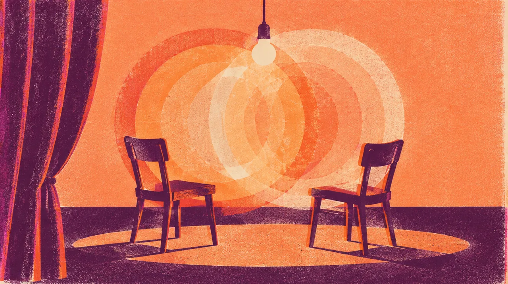

COMEDY · SEP 18 · Los Angeles
BACK TO SCHOOL
The joy of absolutely losing it laughing.
The beautiful sound of both of us absolutely losing it.
This date has passed.
This date has passed. The page keeps it as part of the year; it does not claim who went.
- When
- Fri Sep 18, 2026
- Where
- The Elysian · 9:30 to 10:45 p.m., Los Angeles · Directions
- Light
- After dark
Notes to the crew
Dig into the sound and story
2 short chapters. Open the ones that call to you.
THE ROOMA place that leaves room for strange.
The Elysian describes its work around investigation, risk, collaboration and audience connection. Its workshops extend from physical performance to ensemble work. That spirit makes room for comedy you could not have predicted from a poster.
THE OCCASIONBack to School, without the homework.
Katie, Erika and Laser’s September 18 party invited 90s teen outfits and old school photographs with a little story. The invitation was playful and optional. The important part of my plan was the Joe-and-Gordon evening.
Same crew, other nights
Swipe the picture, or use the arrow keys, for the next night.